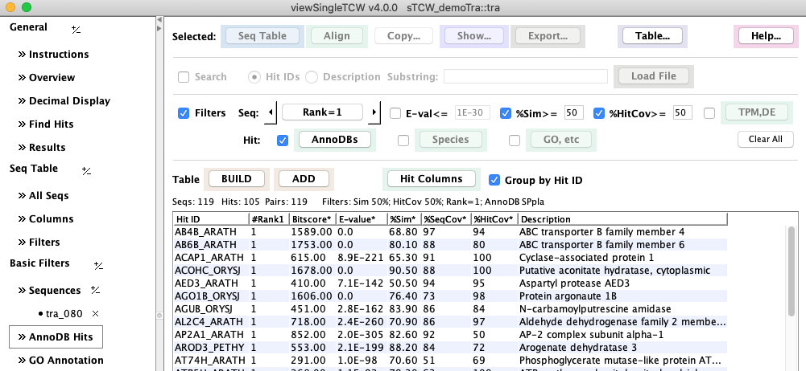
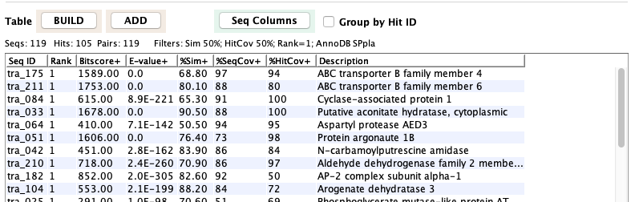
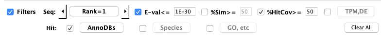
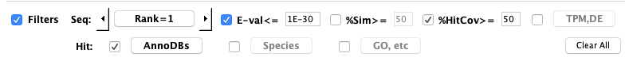
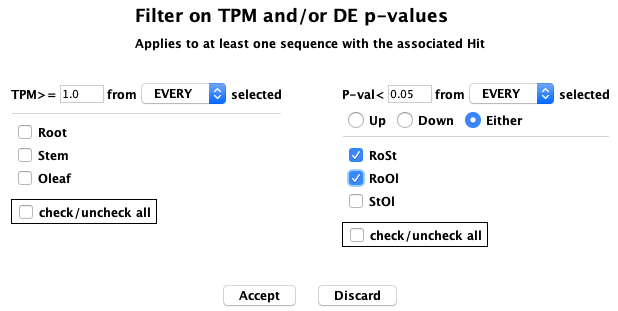
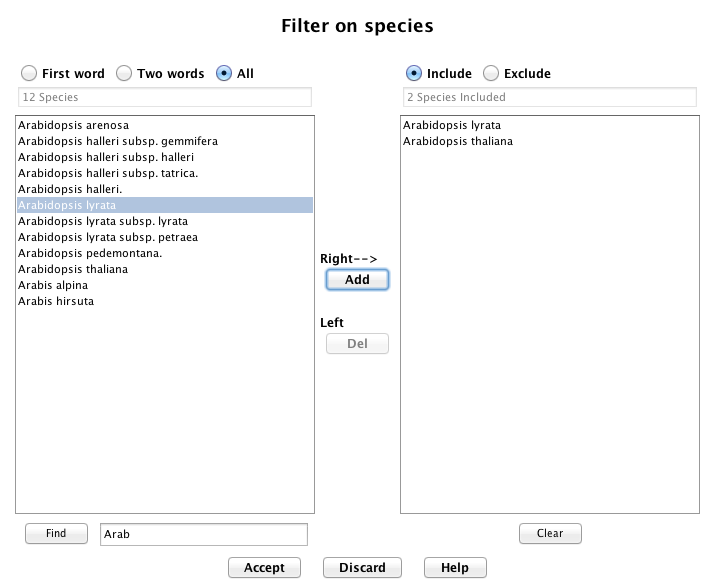
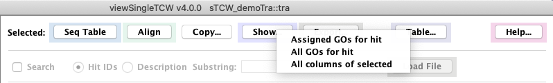
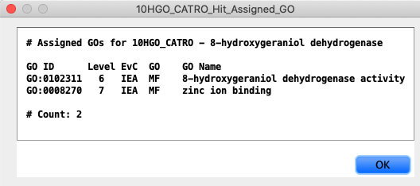

|
viewSingleTCW - View and Query Single Species
AnnoDB Hit Filters
The AnnoDB Hits option under Basic Filters searches by Hit ID, Description and/or filters.
- Select the Search checkbox to enter a substring for searching.
- Select the Filters checkbox to set one or more associated filters.
- The text above the table (i.e. Filters: shows the filters applied.
- Select a hit followed by Seq Table will show all the associated sequences in the Sequence Table.

The decimal number display can be changed with Decimal Display.
Uncheck the Group by Hit ID to view the sequences.

The Align option shows the alignment of all sequences that have been assigned to a hit. The alignment shown below uses dynamic programming.
 

Filters Seq: This row of options apply to the sequences that align to the annoDB hit (generally protein, but can be nucleotide).
- Selecting TPM brings up the window on the right. By selecting "RoSt", which is the p-value for the
counts of Root compared to Stem, the result would be all annoDB hits that have at least one sequence
with RoSt<0.05.
| 
|
Filters Hit: This row of options apply to the annotation assigned to the annoDB hit.
- Selecting AnnoDBs brings up a window of all available annoDBs, e.g. "sp -- plants", where one or more
of these may be selected. By default, they are all selected.
- Selecting Species brings up a window of all available species (shown on the right), where one or more may be selected. By default,
they are all selected.
- Selecting GO, etc brings up the window shown below.

|

|
The windows below are the available columns for the hit table and sequence table. These can be changed without running BUILD TABLE again.

|
Selected:
- Copy... provides copying to clipboard the Hit ID, Description or Hit Sequence of the selected
sequence.
- Show... is shown above, with a Assigned GO for hit example on the right.
- Export... has the same first two items as Show...,
but writes to file the GO info or GO IDs; the GO IDs can be loaded in the GO Basic panel
with its Load File.
| 
|
Table... has Show column stats, Copy table and Export table.
|


{kind=link}
{kind=link}
{kind=link}
{kind=link}
{kind=link}
{kind=link}
{kind=link}
{kind=link}
{kind=link}